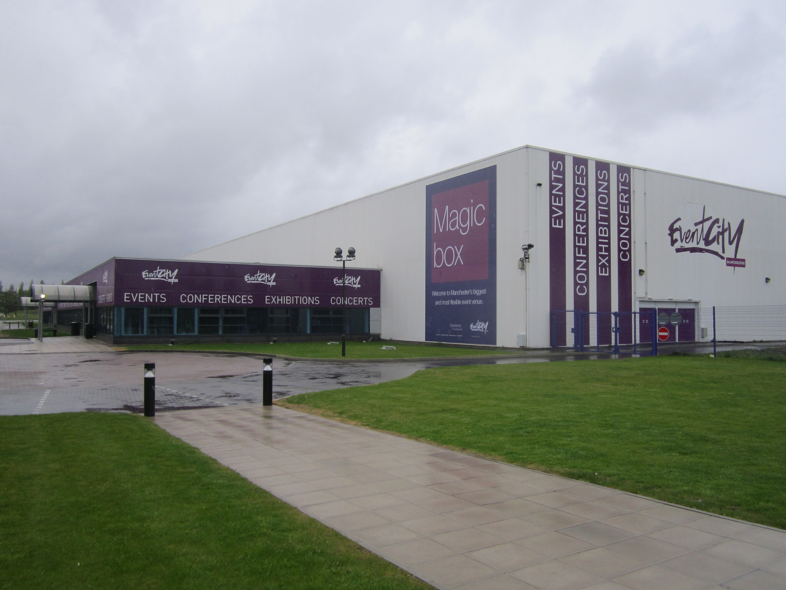

Event City
Event City WebsiteEventCity Limited was a conference, gala dinner and exhibition venue in Greater Manchester, England. It opened in 2011 and was the largest event venue in the North of England, with four halls and a combined space of 28,000 m². It was closed during 2021 as a consequence of the pandemic.
